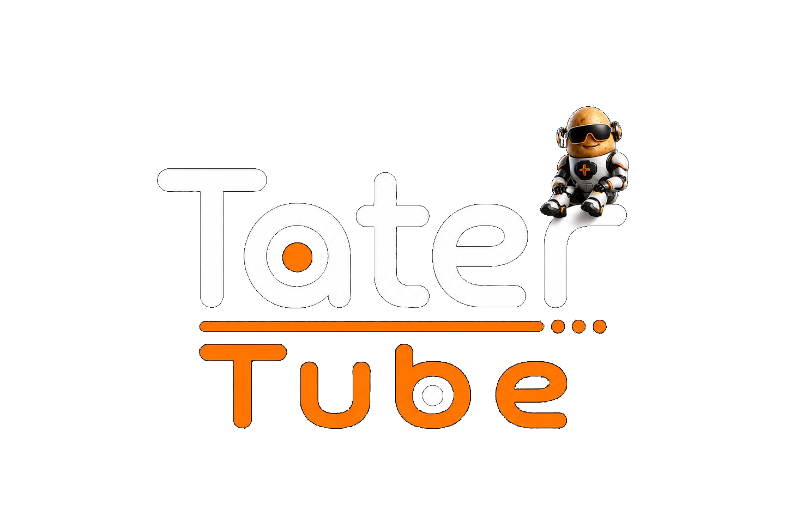
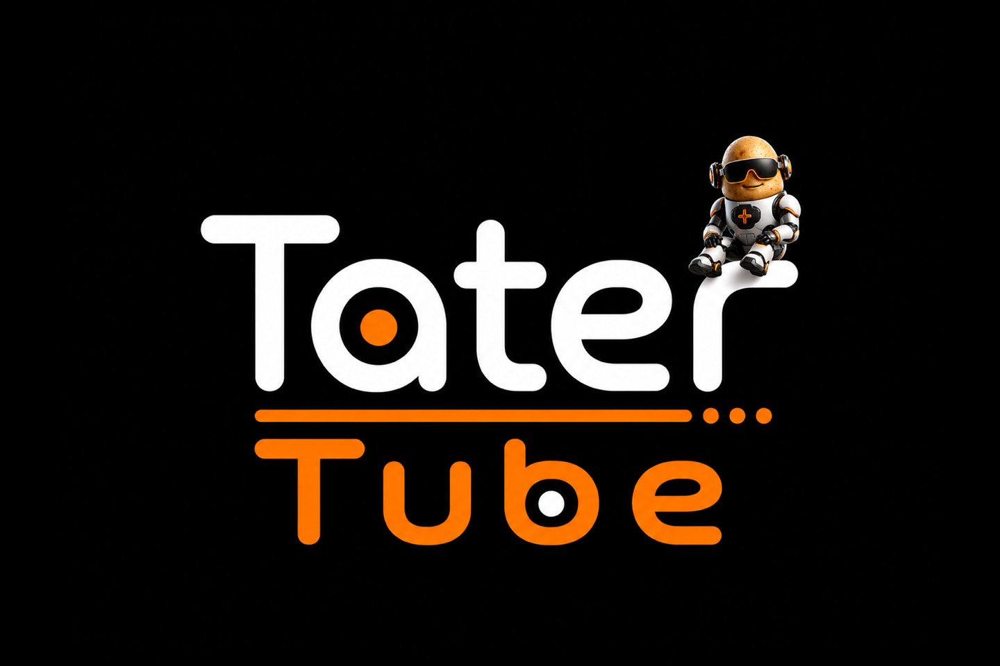

1. Desktop Mode
On Steam Deck, press the Steam button, choose Power, then Switch to Desktop.

Choose the Steam Deck/Linux installer or a ready-to-flash Raspberry Pi image, then configure modules from Settings inside Tater Tube.
On Steam Deck, switch to Desktop Mode first. Download and open Install-Tater-Tube.desktop, approve the execution prompt, and leave it open while the full release downloads. The installer runs without sudo and asks Steam to add Tater Tube to the non-Steam library.
On Steam Deck, press the Steam button, choose Power, then Switch to Desktop.
Download and open Install-Tater-Tube.desktop, then approve the prompt to run it.
Let the installer finish, return to Gaming Mode, and open Tater Tube from the non-Steam library.
Choose the NTSC, PAL, or Pi 5 HDMI image. The Pi boots directly into Tater Tube as a dedicated appliance.
Open the latest GitHub release and choose the NTSC, PAL, or Pi 5 HDMI image for your display.
Use Raspberry Pi Imager, Balena Etcher, or dd to write the `.img.xz` to an SD card.
Connect the display, audio, remote receiver, and network, then boot directly into Tater Tube.
Install the server on a NAS, PC, or small Linux host. It handles the shared Tube TV schedule, Newznab Stream, local media folders, music, player pairing, activity history, and optional transcoding.
On Steam Deck, Linux, or Pi, use Settings, System, Check For Updates. The Pi updater also refreshes appliance helpers, runtime packages, RetroArch cores, Moonlight, Bluetooth support, boot splash, IR, fan control, and display setup.
bash <(curl -fsSL https://github.com/TaterTotterson/Tater-Tube/releases/latest/download/install.sh)
Open http://tatertube.local:24024/setup from a phone or computer on the same network. Pair The Tube to its server first, then configure VoD, Public Access, Tape Deck, Game Center, PC Link, local commercials, and custom VoD channels.
Enter the server address and short-lived pairing PIN. Tube TV, Stream, Local, server music, guide data, and TaterText then arrive from the server.
Create local commercial categories for Public Access and VoD TV Mode. Tube TV commercials are managed separately by Tater Tube Server.
Build named TV Mode channels from Plex, Emby, or Jellyfin movies and series. Custom channels appear first and can use a specific commercial category.
http://SERVER-IP:8080.Use the server UI to pair and name players, add Newznab and NNTP providers, scan local movies, series, and music, configure transcoding, upload Tube TV commercials, create channels, choose logos, and inspect the TV Guide and Activity history.
Map folders into Docker, add their container paths under Local Media, and scan metadata.
Enable automatic channels or create your own from genres, movies, series, seasons, and episodes.
Create a setup PIN, enter the server URL and PIN on each Pi, and give every box a room name.